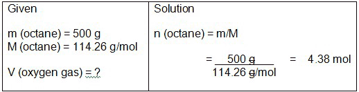

Unit 5: Gases and Atmospheric Chemistry
Activity 3: Gas Everywhere
Content
Journal

|
As you are reading through this activity, keep track of the bold-faced terms and headings and their meanings, examples, images and calculations. Include your own understanding of these terms in your notes. Pay close attention to any formulas representing gaseous relationships. |
|---|
Gay-Lussac’s Law and Avogadro’s Principle

|
Watch the videoclip Making Water in a Can. Please be aware, that, depending on your Internet connection speed, all clips on this page may take a few minutes to download. You can always continue reading the remainder of this page while you wait. |
|---|
The reaction between hydrogen gas and oxygen gas to produce water vapour is a dramatic one. The reaction can be represented several ways (i.e., number of atoms, molecules, and moles) and because gases are involved in the reactant side and the product side, a new aspect can be introduced into an understanding of how gases behave. This chemical reaction can be represented in the following ways:
The Law of Combining Volumes
Joseph Louis Gay-Lussac (1778-1823) proposed the law of combining volumes:
At a given pressure and temperature, the volumes of reacting gases are in ratios of small whole numbers.
Amedeo Avogadro (1776-1856) went one step further. He proposed the following, which is now known as Avogadro’s Hypothesis:
Equal volumes of all gases, at the same temperature and pressure contain the same number of molecules.
The extension of Avogadro’s hypothesis led to Avogadro’s Law regarding the quantitative relationship between the volume of a gas and the number of moles of the gas when pressure and temperature are kept constant:
V
 n
n
Gas Stoichiometry
Given conditions of temperature and pressure, quantifying reactions involving a gas as a reactant, or as a product, involves using gas laws in a stoichiometric relationship.
 Example
Example
At STP conditions, what volume of oxygen gas is needed to react with 500 g of octane, C8H18? The balanced equation is as follows:
 Sample Solution
Sample Solution
1. Your first step is to convert the mass of the octane to the number of moles.

2. Your second step is to find the number of moles of oxygen gas by comparing the mole to mole ratio between octane and oxygen gas. Let x represent the number of moles of oxygen gas needed for the reaction.
Solve for x-
3. You are not finished. Oxygen is a gas and the reaction occurred at STP conditions. You have found the moles (n) but you still need to calculate the volume.
Whenever gases are involved in the reaction and conditions of temperature and pressure are given then the gas laws formulas need to be used to make any of their calculations.
 Check Your Understanding
Check Your Understanding
- Nitrogen gas (N2) and hydrogen gas (H2) react to produce ammonia (NH3) according to the following balanced equation:
How many litres of hydrogen gas measured at 100 kPa and 273 K are required to react completely react with 11.2 L of nitrogen gas measured at 100 kPa and 273 K?
 Answer
Answer
Gas Mixtures
In a mixture of gases where they are not reacting with each other, their respective partial pressures may be determined by using Dalton’s law of partial pressures:
The total pressure of a mixture of gases is the sum of the partial pressures of the gases that make up the mixture.
If you have a mixture of Gas A, Gas B, Gas C and Gas D in certain proportions, the total pressure of the mixture can be determined as follows:
In general terms, Dalton’s law of partial pressure can be expressed as:
Each gas that makes up a physical mixture is considered to have its own pressure within that mixture.
In general terms, the air in our lungs is composed of a mixture of water vapour and dry air. At the normal 101.3 kPa of atmospheric pressure, the air pressure is due to the pressure of dry air and vapour pressure of water. The total pressure expression is as follows:
Normal body temperature is 37°C. The vapour pressure of water at that temperature is 47.07 mmHg. The conversion to kilopascals is as follows:
In our lungs, typically, the pressure of dry air is…
Question
- In a chemical reaction where hydrogen gas is collected over water at a temperature of 25 °C, the total pressure of the water vapour and hydrogen gas is 740 mm Hg. The vapour pressure of water vapour at 25°C is 23.76 mmHg.
Calculate the pressure of the oxygen gas in mmHg.
Answer
This is a disclaimer. External Resources will open in a new window. Not responsible for external content.
Unless otherwise indicated, all images in this Activity are from the public domain or are © clipart.com or Microsoft clipart and are used with permission.